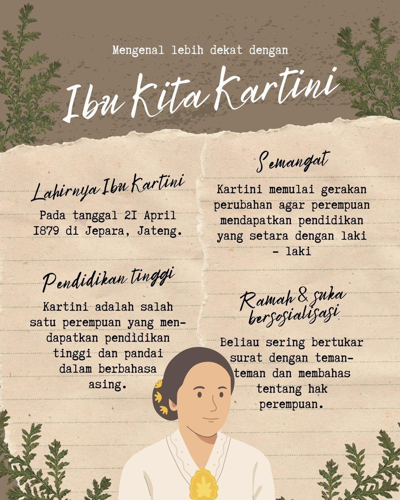
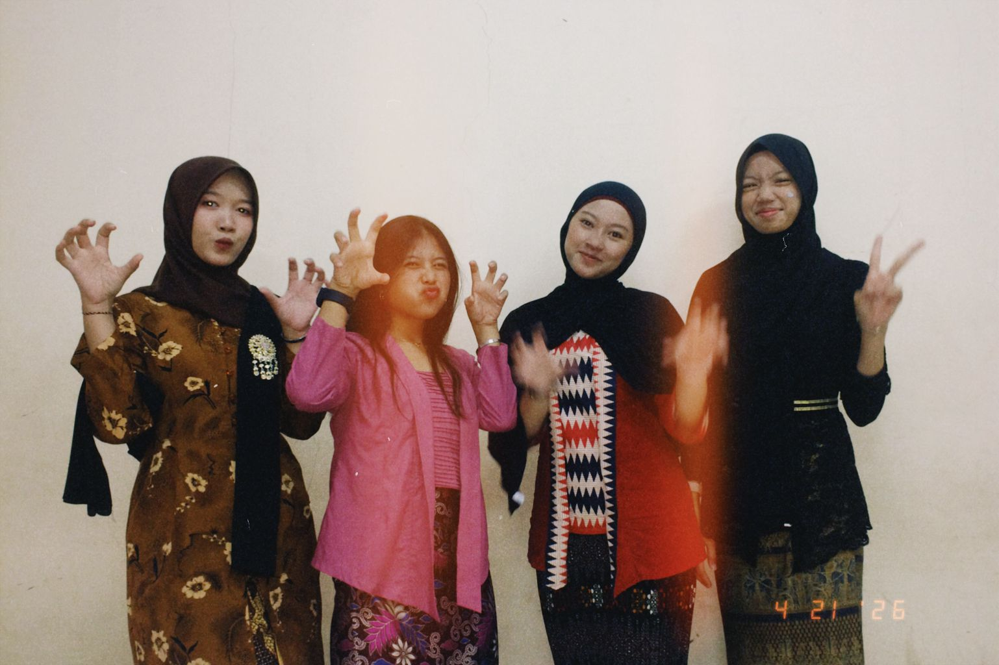
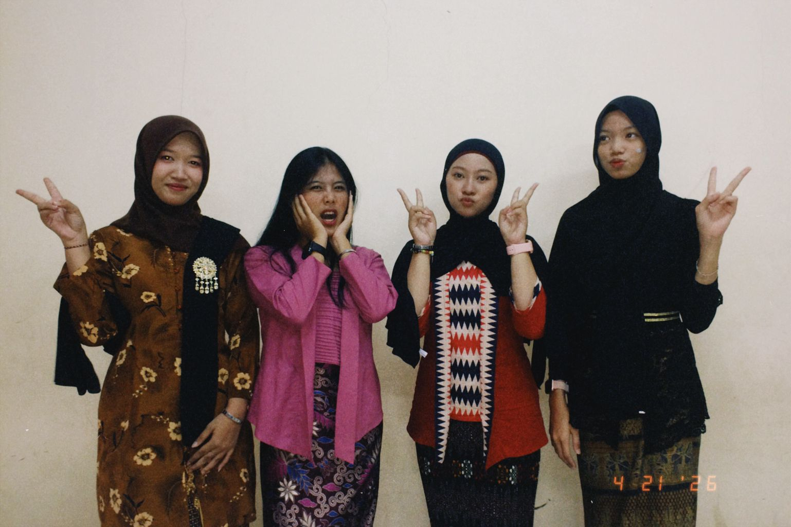
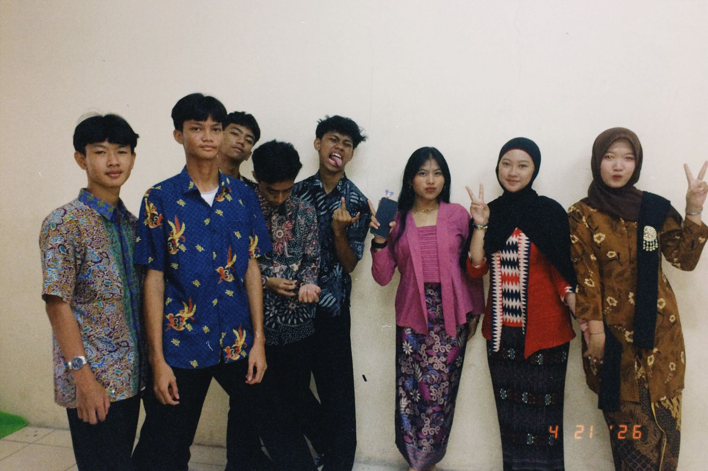
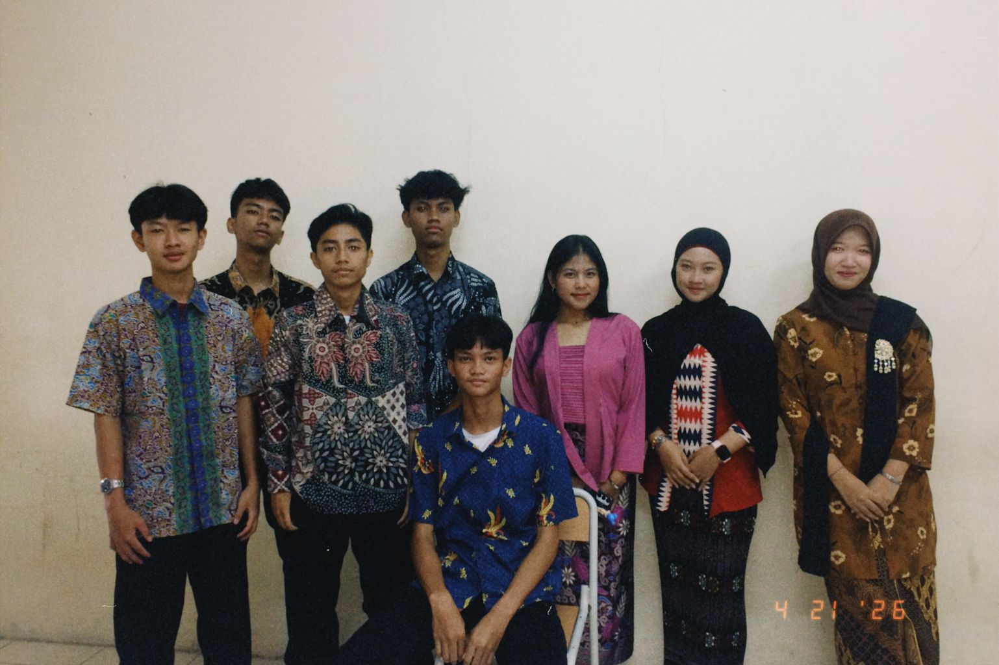
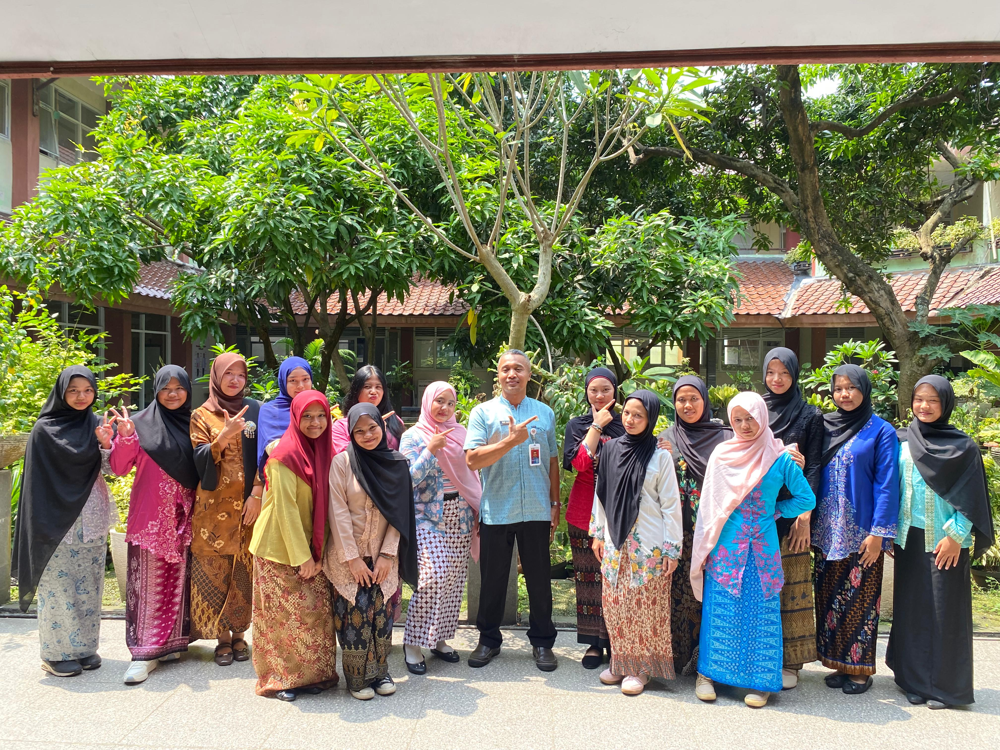
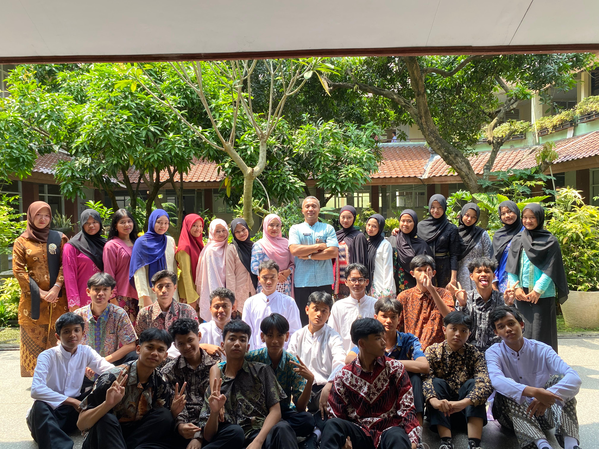
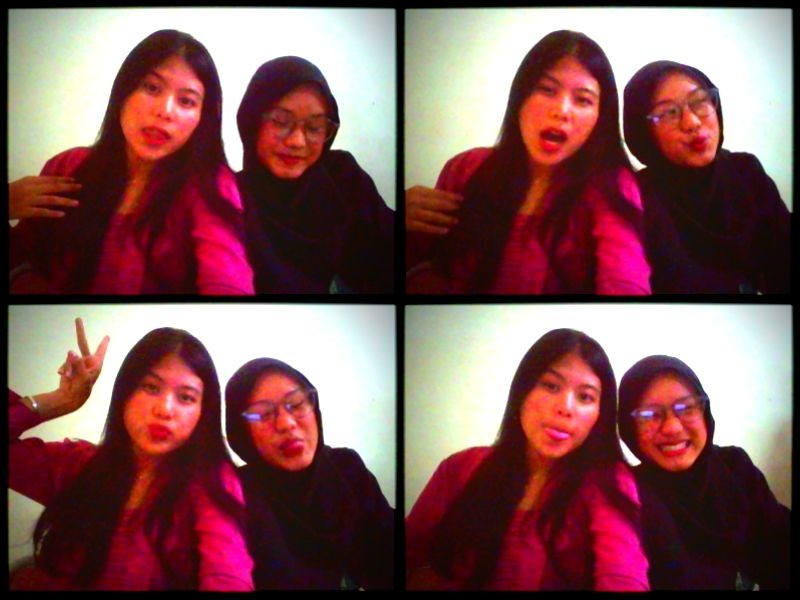

21 April
R.A Kartini adalah pahlawan nasional Indonesia yang memperjuangkan emansipasi wanita. Ia lahir pada 21 April 1879 di Jepara dan dikenal melalui pemikirannya tentang pendidikan perempuan. Tulisan-tulisannya dibukukan dalam karya "Habis Gelap Terbitlah Terang".

Ibu kita kartini
Putri sejati
Putri Indonesia
Harum namanya
Ibu kita kartini
Pendekar bangsa
Pendekar kaumnya
Untuk merdeka
Wahai ibu kita kartini
Putri yang mulia
Sungguh besar cita-citanya
Bagi Indonesia
Ibu kita kartini
Putri jauh hari
Putri yang berjasa
Se Indonesia
Wahai ibu kita kartini
Putri yang mulia
Sungguh besar cita-citanya
Bagi Indonesia






